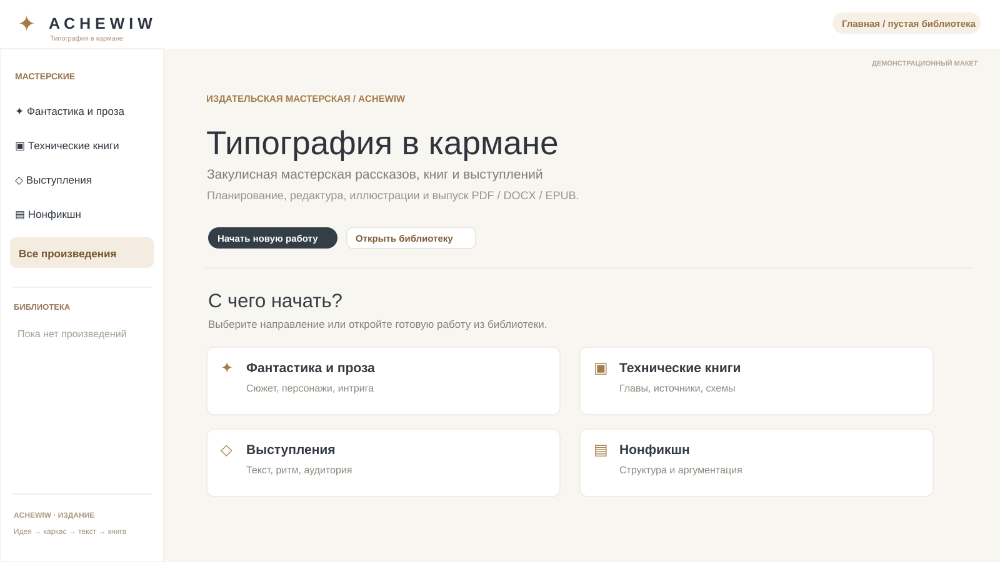
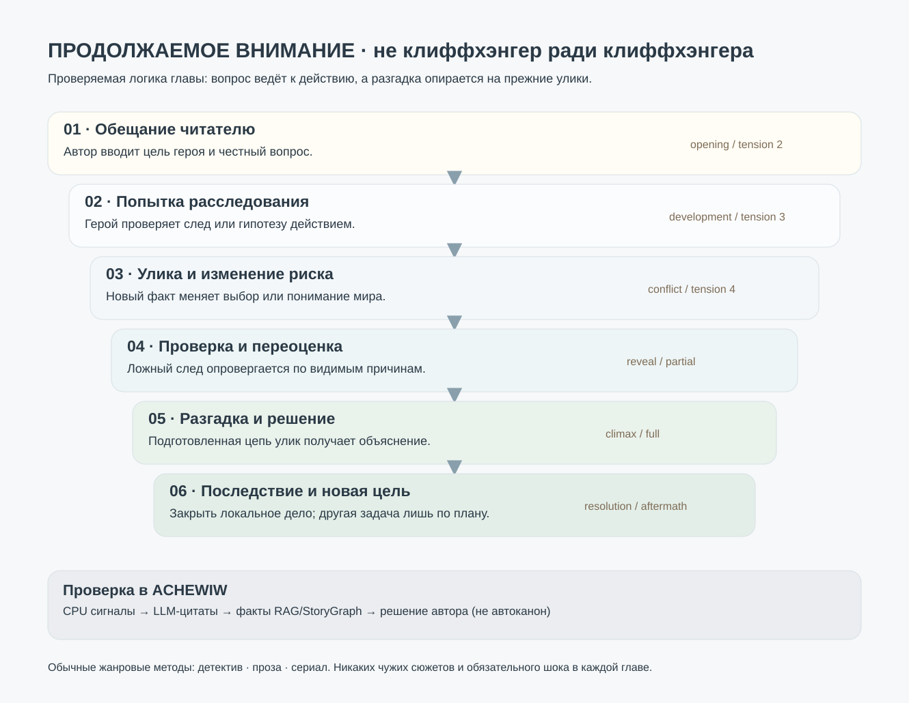
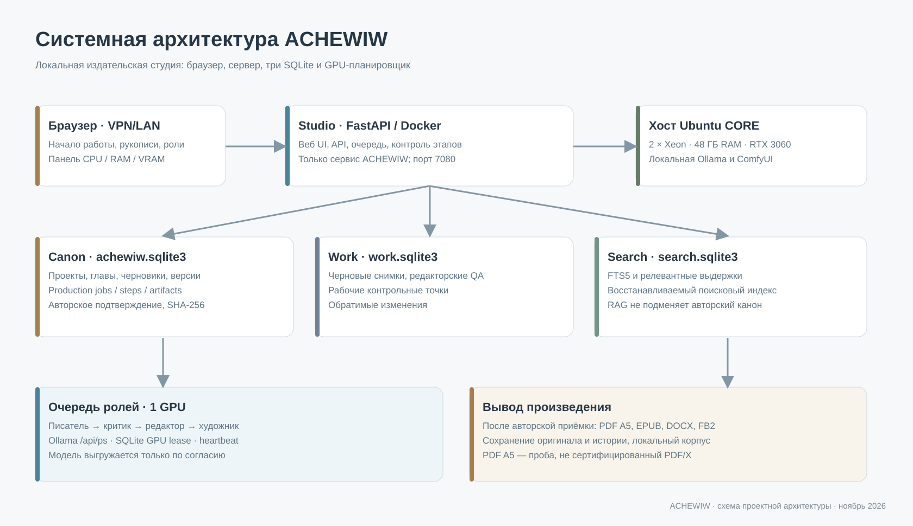

Сюжет и RAG
Память персонажей, причинность, граф загадок и запланированные разгадки.
Закулисная мастерская рассказов, книг и выступлений. Планируйте сюжет и канон, пишите и проверяйте главы, добавляйте загадки и иллюстрации, выпускайте PDF, DOCX и EPUB на собственном сервере.
ACHEWIW — self-hosted проект на Python, FastAPI, SQLite и Ollama. Вся работа с рукописью происходит локально. Модели и ComfyUI используют GPU последовательно, а автор утверждает предложенные изменения.
Здесь показан демонстрационный макет пустой библиотеки. Текст и изображения личных произведений не публикуются в этом разделе.

Обещание → попытка расследования → проверяемая улика → переоценка → честная разгадка → последствия. Для детектива, прозы и серийных историй используются разные правила. Модели должны находить конкретные доказательства в тексте, а не добавлять интригу пустыми репликами.

Память персонажей, причинность, граф загадок и запланированные разгадки.
Проверка повторов, пустых диалогов и неподтверждённых выводов.
Одна роль GPU за раз: писатель, критик, редактор и художник.
PDF A5, DOCX, EPUB, FB2 и версия рукописи после решения автора.

Подробнее об интриге, сюжетных обещаниях и честных развязках